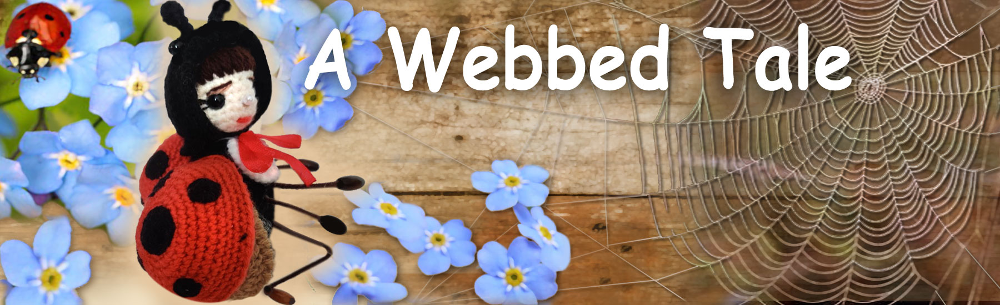

Fairy Tales of Philomur the Cat
faithfully recorded by his devoted admirer — Michel the Rat

🕸️ A Webbed Tale 🕸️
(🐞 A Fairy Tale about Vera and Spider Boris 🕷️)
Chapter 1 | Chapter 2 | Chapter 3 | Chapter 4 | Chapter 5 | Chapter 6 | Chapter 7 | Chapter 8
Chapter 1. An Unusual Encounter
That day the sun was playing with golden glimmers in the dust. A light breeze slipped through the cracks of the old barn, carrying the scent of dry hay and cool shade. Ladybird Vera was not planning to fly inside — she only wanted to hide from the heat for a moment. The barn seemed quiet and empty to her, almost magical. Rays of light seeped through the narrow gaps — like golden threads stretched in the air. But as soon as she flew a little farther, everything changed. Something stuck to her leg. Then — to her wing.
She flapped her wings desperately, trying to free herself — and flew straight into a thin, invisible trap. The web sprang and stretched, clinging to her wings and tiny legs. Vera was frightened. The more she tried to escape, the more tightly she became tangled in the sticky threads.
“Ah… what is this?.. Help…” she whispered faintly. From a deep crack in the wall came a low, heavy grumble. At first quiet, then louder. There was a rustle: someone was making their way through dust and darkness.
“Aha! Caught you…” said a gruff voice.
“Who’s been tearing up my web here?” A large leg appeared, then an eye in the shadows. Spider Boris slowly crawled into the light, expecting to see a juicy fly for lunch. Instead, he saw a tiny trembling figure with black spots on bright red wings.
“Forgive me… Mr Spider…” squeaked Vera, curling into a little ball. “I… I didn’t mean to… It was an accident…”
On the roof, between the wooden planks, Bee Zhuzha was sitting, as always, with nothing to do. She heard the frightened voice and peeked inside. Her scatterbrained imagination instantly painted a terrible picture.
“Help!! Help!!!” she screamed so loudly that she scared a sparrow off the apple tree. “Boris is eating Vera! He wants to eat her! Someone help!!! Help!!!” And spinning, squealing, and chattering, she rushed off without waiting for an answer. She didn’t know that spiders do not eat ladybirds. Details did not interest her — the important thing was that something exciting had begun. And where there are events, there is Zhuzha. Meanwhile, the barn remained quiet. Vera stopped moving. She fell silent and waited for her fate, not knowing what this frightening, huge, old spider would say. And Boris, squinting against the light, suddenly felt: this meeting was not quite ordinary.
Chapter 2. Archibald and Maxim
On a scorching midday, when even dragonflies flew lazily, as if against their will, and the manure heap exuded a thick, philosophical aroma, Maxim the Rabbit was bubbling with energy. He rushed back and forth, waving his paws and handing out protest leaflets to everyone he met — beetles, chicks, even an indifferent mole who peeked out of his burrow for a moment. — The rights of worms are the rights of us all! — he repeated like a spell. — Who, if not us? Where, if not here? When, if not now?!
But the day was unbearably hot, and the worms themselves — for whose sake he had decided to fight — had long since burrowed deep into the cool manure. They were cozy and calm and demanded no rights at all. Quite content with life, they responded to all slogans, megaphones, and placards with complete silence. Maxim, however, longed desperately for scale, publicity, and a loud effect. He needed an audience, admiring glances, and a photograph on the cover of the magazine “Living Earth.”
And suddenly… the rabbit spotted him — dignified, important. Exactly what was needed!
Along a sunlit path strolled Beetle Archibald, walking with leisurely elegance. A May beetle, as May exists in dreams: dressed in a tailcoat, wearing a top hat, with a slender rapier in a scabbard inlaid with golden scales. His antennae were perfectly groomed, and his shell gleamed as if freshly polished. He walked slowly, with the air of someone who had stepped out not to take a walk, but to be noticed.
Maxim quickly brushed the dust from his vest, smoothed his ears, and hurried toward him, trying to look confident and noble.
— Greetings to you, Comrade Archibald!
The beetle raised an eyebrow — one elegant, chitinous arch.
— A pig is no companion to a swan, — he said with icy politeness and turned away, as if the air itself had become less worthy.
Maxim froze for a moment, but had no intention of retreating.
— Completely agreed, — he deftly redirected the remark. — Then… Citizen Archibald! We are holding a most important public event! A picket for the rights of hermaphroditic worms! You have a chance to demonstrate your bright civic stance!
Without waiting for a reply, he immediately pulled out a megaphone (made from a mint candy wrapper) and shouted so loudly that caterpillars woke up:
— FREEDOM AND EQUAL RIGHTS FOR HERMAPHRODITIC WORMS!!!
Archibald flinched. His antennae trembled.
— What?! — he hissed, turning sharply. — Are you… are you implying that I… am a worm?! Have you lost your mind, you long-eared agitator?! This is a public insult! Public, do you understand?! How dare you link my beetle honor with… with some slime-covered creatures from a manure pile!
He spun around swiftly, antennae flying upward, one leg resting on the hilt of his rapier. His shell practically crackled with rage.
— You’ll dance for me now, you long-eared propagandist!
And something terrible — a vivid lesson in the relationship between words and consequences — was about to happen… if not for Zhuzha.
As always, perfectly on time and entirely out of place, she buzzed over their heads and shouted:
— Help! Help! Boris is going to eat Vera!
Chapter 3. The “Rescue” of Vera
— Help! Help! Save our Vera from a terrible fate! Where are you, heroes?! — Zhuzha shrieked, zigzagging anxiously around the yard like a siren on wings.
At first, no one responded. Birds hid in the bushes, mice stayed in their holes. Even the drake pretended he had nothing to do with any of it.
Archibald and Maxim raised their heads at the same time and exchanged glances.
— What Vera? — Archibald asked irritably.
— And who is this spider Boris? — Maxim added, already sensing a loud affair.
— In the barn! — Zhuzha babbled. — It’s ужас! A tragedy! He’s… he’s eating her!
Archibald paused for a moment. Ah yes, that ladybird… She had never interested him: too modest, too quiet. No flirting, no intrigue, no bright makeup on her wings. Not his style at all. But then he noticed the looks directed at him. “If I don’t intervene now,” he thought, “they’ll decide I’m heartless. Or worse — that I’m a coward. And that I cannot allow.” And forgetting about the quarrel, the picket, the leaflets, and the manifestos, both of them — each for his own reason — hurried after Zhuzha.
Several leaflets remained lying in the dust near a bitten plum and a poster reading:
“ALL WORMS ARE EQUAL, BUT SOME ARE MORE EQUAL.”
At the entrance to the barn, Archibald waved his rapier and proclaimed loudly, without bothering with details:
— You are a soulless villain, Boris! How dare you imprison a young lady?!
From the shadows came a calm voice:
— Honored sir, I am a simple spider and have imprisoned no one. Everything that enters my web, by the laws of nature, becomes my dinner. Have you yourselves not enjoyed the fruits of Madam Apple Tree, who year after year gifts the world sweet apples?
Archibald was stunned. “An insolent fellow — philosophizing,” he thought, finding no reply.
Boris continued:
— But if you insist that I release my prey… perhaps you would care to offer yourselves in exchange?
Archibald found this turn of events most unpleasant. He hesitated, trying to come up with a dignified response.
Suddenly Vera, watching the scene from the web, cried out in horror:
— No! No! I beg you, Mr. Spider, don’t touch him! It’s my fault. You were left without dinner because of me. Eat me — if there is no other way!
Archibald immediately brightened and, turning to Boris with theatrical pride, declared:
— You hear that! If a lady asks, a gentleman has no right to refuse. I demand that her wish be fulfilled! Otherwise… I challenge you to a duel!
Maxim, though not fully understanding what was happening, sensed that the situation was politically delicate. He tapped on his megaphone and announced:
— Women’s rights are everything! If the mademoiselle has expressed the will to be eaten — that is her choice! No one has the right to judge it!
— And if you do not eat her, Citizen Boris, the newspapers will write about discrimination! Right on the front page: “Spider Discriminates Against Minorities!”
Boris sighed. He quickly realized that arguing was pointless, and that the conversation was more exhausting than hunger.
— Honored gentlemen, rest assured: I shall show respect for the feelings of the young lady. I assure you, her wishes will be heard and… taken into account.
And now, if you please, I ask you to leave my home.
Archibald proudly lifted his chin, as if he had just saved an entire nation, smoothed his antennae, brushed a speck of dust from his tailcoat, and tipped his top hat, accepting the gazes of an imaginary crowd. Then he departed with dignity and leisure. Maxim followed him, hopping along, already composing two articles in his head: “Modern Perspectives on the Concept of Free Choice” and “Spiders and Their Patriarchal Web: Challenges of Our Time.”
Top of the pageChapter 4. Vera and the Spider Boris
So who was it, after all, who had been caught?
Thoughts buzzed in Vera’s little head like bees trapped in a jar.
But from the shadows came a voice — unexpectedly calm, even polite:
— Mademoiselle, please, calm yourself, — said the spider Boris, coming closer. — I have no intention of harming you. Besides… ladybirds are unsuitable food for us spiders. Dietary incompatibility.
Boris carefully helped Vera free herself from the web. As he removed the torn strands, he barely touched her wings — almost by accident — and was surprised himself at how delicate and lovely they were. Trembling all over, in her crumpled little dress, dusted with the finest specks of dust, Vera stood in the middle of the barn, barely breathing. Everything that had happened felt like a dream — strange, tangled, unsettling. Boris gently settled onto a dusty beam and drew his legs closer to himself.
— Thank you, Mr. Spider, — Vera whispered. — I am so sorry I damaged your web. Please forgive me.
— Nonsense, my dear visitor. A web can always be made anew, while a conversation with a beautiful lady is far rarer.
He bowed slightly.
— My name is Boris.
— Very pleased… Mr. Boris. And your patronymic? — she asked, not wishing to be too familiar.
— For you… just Boris, — he said, unexpectedly even to himself, and felt a little embarrassed.
— May I invite you for a cup of tea? With pastries… made from the freshest, finest aphids. An exceptional variety — collected personally.
— Thank you, Mr. Boris… but I really must be going. I have already stayed far too long.
Boris nodded, but his gaze never left her eyes. There was something fragile in them — the kind found in those who know how to notice subtle things: a sunbeam on a petal, the whisper of grass, the warm scent of rain.
Something strange stirred in his old, dry spider’s heart.
— May I ask… what made you object to my, shall we say, logical idea of an exchange? — he asked suddenly.
— Oh… please don’t ask, — she replied nervously, lowering her eyes.
— But you were ready to sacrifice yourself for him? The dandy Archibald, it seemed to me, did not quite deserve that.
— I forbid you, sir, to speak of my friend that way! — Vera flared up. — Mr. Archibald… he… he is worthy… he is wonderful… he is distinguished…
She stopped short — and realized she was saying things a young lady ought not to say.
— Forgive me. I… I must go.
— Of course, mademoiselle. I had no intention of embarrassing you.
— Farewell, — she said hastily. — I… I can manage myself. Vera slipped into the crack and vanished, like a bright spark in the twilight.
Boris was left alone. He stared silently into the darkness where she had just been.
— What a remarkable and lovely young lady… — he whispered. — Ah, what am I thinking… an old, tedious spider. What right have I to admire such charming creatures as she…
He crawled back into his crevice and sat there for a long time without moving. No web. No dinner. No thoughts of work. Only Vera’s gentle voice — and her trembling eyelashes — stood before his eyes. He could not fall asleep.
In his heart, a strange, long-forgotten feeling came alive — unlike hunger, unlike fear. It was sweet, like the first rain after a long drought.
Top of the pageChapter 5. In Search of Vera
Several days passed. The spider Boris grew unusually thoughtful. He abandoned his web, stopped checking his traps, and did not repair the torn threads. His thoughts were elsewhere. He was thinking of Vera.
Now he knew for certain: it was he himself who had been caught. Not in sticky threads — but in the finest web of feelings. The kind impossible to see with the eye, yet impossible to tear. He did not even notice how he found himself at the entrance of his crevice, crawled out into the bright daylight, and began to search… To search for two tiny wings — warm orange, with neat black spots.
But the wings were nowhere to be found.
Instead, Zhuzha appeared at once.
Seeing Boris, she fluttered closer, settled on a crooked branch, and began to watch, buzzing now and then with impatience.
— And what was the point of making such a fuss for no reason? — Boris grumbled, though without his former sternness.
He was about to retreat back into the shadows when, to his own surprise, he said:
— Listen, Zhuzha… do you happen to know where Vera lives?
He immediately felt embarrassed.
Too frank.
He had not meant to reveal himself.
And to smooth things over, he lied — for the first time in a very long while.
— She… she forgot a lace parasol here. I wanted to return it. You understand.
— A parasol? — Zhuzha perked up. — Oh, I see… how charming! Of course I know where she lives!
— Over there, by the raspberry bushes, near the old oak. Close to Timothy the Toadstool. You won’t get lost.
Zhuzha’s eyes sparkled: a loud and exciting story was already forming in her mind — one she would gladly spread all over the area.
But Boris did not care. Gossip did not concern him — not even about himself. He simply went. Quietly, but with determination. He had to see her.
By evening, he had reached the place. And — oh miracle — she was truly there. Vera was sitting on a leaf, gazing thoughtfully into the distance. In the rays of the setting sun, her wings shimmered softly, like amber petals. She seemed especially light, almost transparent — as if woven from light itself.
Boris came closer.
Carefully, so as not to frighten her.
He raised a leg and bowed politely.
— Good evening, madam…
Vera flinched and turned around.
She was surprised.
And… not particularly pleased.
She did not like Boris — neither his bristly legs, nor his old-fashioned tone, nor this sudden, awkward attentiveness.
But she was a well-bred young lady, and so she replied:
— Good evening, Mr. Spider. Pleased to see you. How are you?
She tried to smile, but inside there was only one desire — to slip away as soon as possible.
Boris noticed.
It hurt and embarrassed him.
He did not wish to be intrusive.
— I was just… taking a walk… visiting an old friend, — he said quietly, realizing that he was lying again.
— I shall not detain you. All the best to you, mademoiselle.
He bowed courteously and slowly turned to leave. Vera watched him go. Something strange stirred inside her — a slight awkwardness. Or pity. Or perhaps it was just a breeze passing by.
Top of the pageChapter 6. Boris’s Feat
The sun was sinking toward the horizon, and the air above the meadow grew still, steeped in evening light.
Boris cast a farewell glance at Vera.
Embarrassed, bewildered, and sad, he understood how awkward and pitiful he must look at that moment.
Oh, how much he wished to say to her, but…
Suddenly he noticed a field sparrow diving down like a sharp arrow — straight toward Vera.
— Look out! — cried Boris, and his voice, usually dry and ironic, rang out unexpectedly sharp, almost desperate.
Vera turned — but it was too late.
The spider darted forward. In a single instant, gathering all his strength, he leapt — without thinking, without hesitation — and covered the tiny, trembling body of the ladybird with his own.
The next moment, he found himself in the sparrow’s beak. Unaware of the substitution, the bird chirped happily and soared into the sky. Everything happened so fast that Boris did not even have time to be afraid. A sharp, searing pain pierced his small body. The world blurred.
And then — silence. He was no longer flying, nor falling. It was as if he were drifting very slowly through a transparent fabric of light — soft and weightless, like spring mist. There was no more pain, no fear, no sorrow. He had never loved light — but this one was special. Not blinding, not harsh, but warm and quiet, like the voice of an old friend. For the first time in many years, he felt no heaviness, no grumbling bitterness, no loneliness. Only peace.
He looked down and saw everything he had known and loved: the shed, the crevice beneath the roof, veiled in an intricate, delicate web; the old oak, the pond, the meadow flooded with sunset light; the poultry yard — forever full of clamor, buzzing, crowing, and the restless movement of life. Boris understood: he would not return there.
And yet he was not sad. He even smiled to himself: life had passed — yes. But not in vain. He did not know exactly what it was — wisdom, beauty, love, or self-sacrifice. Probably all of it together. Or perhaps just one important moment that melted an entire life into light.
And below, in the meadow, Vera stood, unable to move.
— Boris!.. No!.. —
her cry was weak, belated, fading.
The sparrow had already vanished into the sky, carrying the little hero away. On the ground, among the blades of grass, only one small black leg remained. Vera instinctively turned her eyes away. The dreadful sight pierced her to the depths of her soul. She trembled from what had happened — and together with the horror grew the understanding: he had saved her. He had given his life for her. He — the strange, grumbling, gloomy Boris. The one who lived in a crevice and did not love sunlight. And in his final moment, he became a true hero.
In her little head, a complex process was unfolding: reassessment, pain, shame, and the dawning understanding of true friendship and love.
Top of the pageChapter 7. Life Goes On
But of course, that was not the end.
Zhuzha — that very bee who simply cannot resist news — had been watching the drama from afar
and was already savoring how she would spread it across the entire neighborhood.
— Just imagine! Boris! Yes, yes, that very old grumbler from the shed!
Who would have thought!
Fell in love like a schoolboy!
Got himself all starry-eyed over a young one…
She flew from daisies to aspens, from the fly agaric to the pumpkin,
buzzing everywhere:
— And she’s such a modest little thing!
Walks around with her eyes lowered, quieter than water, lower than grass…
And yet — look at that — carrying on with an old fellow!
The story caused neither rallies nor universal mourning.
Boris had never been popular:
old, withdrawn, always with a hint of irony.
No one cried for him.
Only Daisy — white, lush, and self-confident —
suddenly took it all far too personally.
— How is that even possible?! — she fluttered indignantly.
— Vera!
Plain, gray, unremarkable…
And he — for her!
Why, he wasn’t even that clever, as everyone thought.
And his taste…
let’s be honest…
rather vulgar.
Daisy puffed herself up:
— Look at me!
I’m beautiful!
And for me — no one.
Not a spider, not a bug, not an ant…
No one!
Is that fair?
Bees buzzed around, leaves rustled, the drake quacked — and life, as always, went on its usual way. Only near the crevice in the shed it seemed to grow just a little quieter.
Top of the pageChapter 8. Forget-Me-Nots
Tears streamed down Vera’s cheeks in thin little rivulets. She cried quietly, hiding her face beneath her tiny legs. She wanted to leave, to hide, to disappear. But she could not return home. There, everything was the same. And here… here, it had happened.
She might no longer have existed — but now Boris no longer did. The world around her seemed unchanged: bees were humming, a breeze stirred the flower petals, sunlight danced on the pond. Yet everything was different. She could have lost her life — but instead she lost a friend. A friend she had not even realized she had been dreaming of.
Barefoot among drops of dew, carefully gathering small blue flowers with her tiny legs, Vera walked across the meadow. Forget-me-nots… She did not choose them deliberately. Her heart simply led the way.
And there it was — the old shed. The crevice in the corner. The same dim half-light. The same scent: dust, wood, and oblivion. And above — the web. Thin, shimmering, as if alive. Once it had frightened her; now it was the last thing that remained of him.
Vera sighed, closed her eyes, and gently, carefully began hanging the forget-me-nots upon the threads of the web.
One flower — and the web trembles, as if breathing.
A second — and it seems the thread has smiled.
A third — like a sigh.
Each little sprig, each petal — like a word. Like gratitude. Like memory. Now the web had become a flower meadow. It no longer trapped or frightened. It kept and remembered.
— Thank you, my kind, noble friend, — whispered Vera. — You have not disappeared. You are here. You will remain here — in this web, in these forget-me-nots, in my memory and in my heart. I will never forget you.
And somewhere high, high above, where clouds end and light begins, a small rainbow silhouette drifted slowly across the sky. It did not know where it would arrive, but it knew this: the world it had visited was beautiful. The journey had not been in vain. And everything had been — right.
Epilogue
This tale is dedicated to all quiet hearts who know how to love while remaining unseen.
❤️ To those who give more than they receive.
To those who weave kindness into the world — quietly, without words.
And to those who, like Boris and Vera,
leave behind a thread of sunlight,
woven like a web,
that will never fade.
The End
Top of the page
🌟 Questions and tasks for the young reader
1. What is this chapter about? Tell the story in 3–5 sentences.
2. Who is the main character in this chapter? Describe them: appearance, personality, and mood.
3. Choose one scene you remember best. Draw it, and add small details you think are important.
4. If you could ask the main character one question, what would it be? Write it down — and try to answer it as the character.